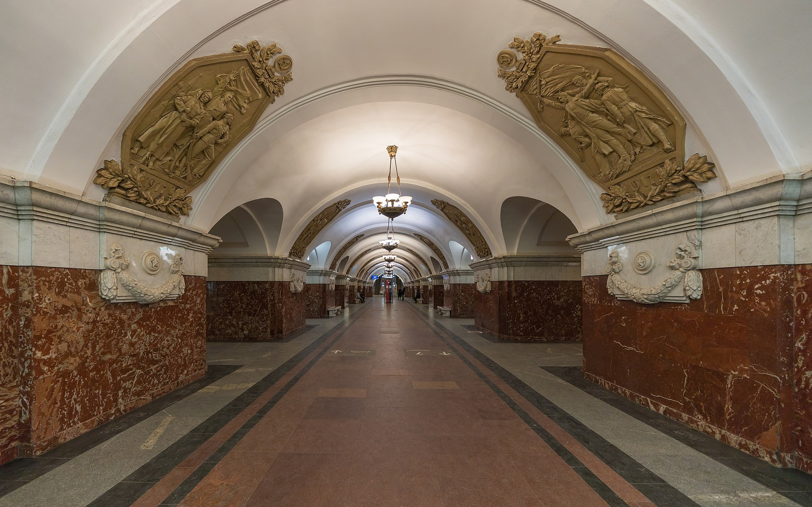
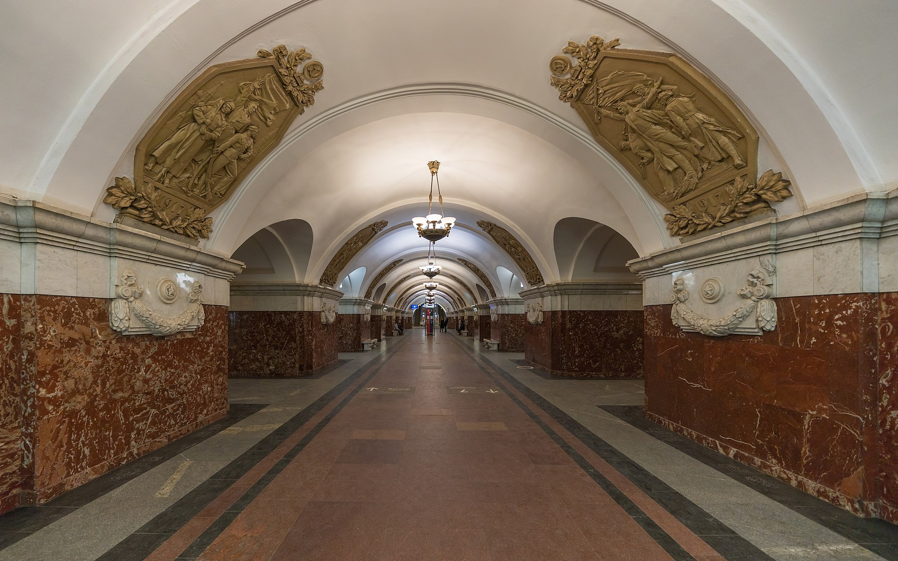

Первоначально проект станции был разработан вице-президентом Академии архитектуры СССР Каро Алабяном и утверждён в 1950 году. Однако в итоге по проекту Алабяна была построена только ротонда наземного вестибюля, а подземная часть станции стала дебютом молодых архитекторов «Моспроекта» В. С. Егерева, М. П. Константинова, Ф. А. Новикова и И. А. Покровского, которых утвердили без конкурса. Согласно воспоминаниям одного из архитекторов станции Феликса Новикова, станцию, возможно, отдали им без конкурса в качестве компенсации, так как незадолго до этого их уже утверждённый проект станции «Киевская» был внезапно отменён Н. С. Хрущёвым.Краснопресненская» — трёхсводчатая пилонная станция глубокого заложения (глубина — 35,5 метра). Авторы проекта — В. С. Егерев, М. П. Константинов, Ф. А. Новиков и И. А. Покровский. Центральный и боковые залы имеют единый диаметр — 8,5 м[14]. Ширина платформы центрального зала — 8,6 м, высота центрального и боковых залов — 5,3 м[14]. Ширина пилона — 3,15 м, ширина прохода — 3,6 м при высоте в 4,1 м
 
